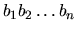

| Glass Beads |
Once upon a time there was a famous actress. As you may expect, she played mostly Antique Comedies most of all. All the people loved her. But she was not interested in the crowds. Her big hobby were beads of any kind. Many bead makers were working for her and they manufactured new necklaces and bracelets every day. One day she called her main Inspector of Bead Makers (IBM) and told him she wanted a very long and special necklace.
The necklace should be made of glass beads of different sizes connected
to each other but without any thread running through the beads, so that
means the beads can be disconnected at any point. The actress chose the
succession of beads she wants to have and the IBM promised to make the
necklace. But then he realized a problem. The joint between two neighbouring
beads is not very robust so it is possible that the necklace will get torn
by its own weight. The situation becomes even worse when the necklace is
disjoined. Moreover, the point of disconnection is very important. If there
are small beads at the beginning, the possibility of tearing is much higher
than if there were large beads. IBM wants to test the robustness of a
necklace so he needs a program that will be able to determine the worst
possible point of disjoining the beads.
The description of the necklace is a string
specifying sizes of the particular beads, where the last character
am is considered to precede character a1 in circular fashion.
The disjoint point i is said to be worse than the disjoint
point j if and only if the string
is lexicografically smaller than the string
.
String
is lexicografically smaller than the string

if and only if there exists an integer
,
so that
aj=bj, for each
and ai < bi.
The input consists of N cases. The first line of the input contains only positive integer N. Then follow the cases. Each case consists of exactly one line containing necklace description. Maximal length of each description is 10000 characters. Each bead is represented by a lower-case character of the english alphabet (a-z), where .
For each case, print exactly one line containing only one integer - number of the bead which is the first at the worst possible disjoining, i.e. such i, that the string A[i] is lexicographically smallest among all the n possible disjoinings of a necklace. If there are more than one solution, print the one with the lowest i.
4 helloworld amandamanda dontcallmebfu aaabaaa
10 11 6 5